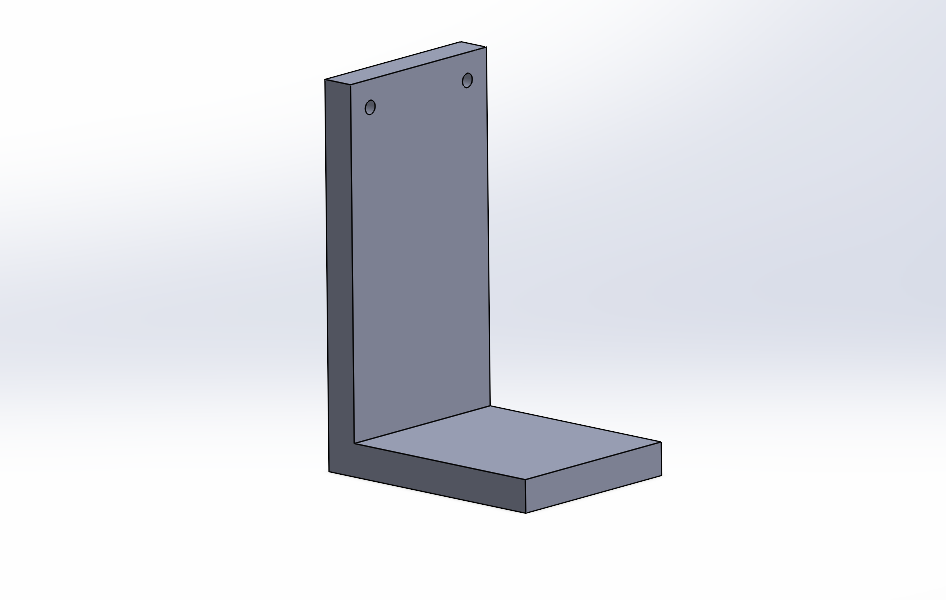
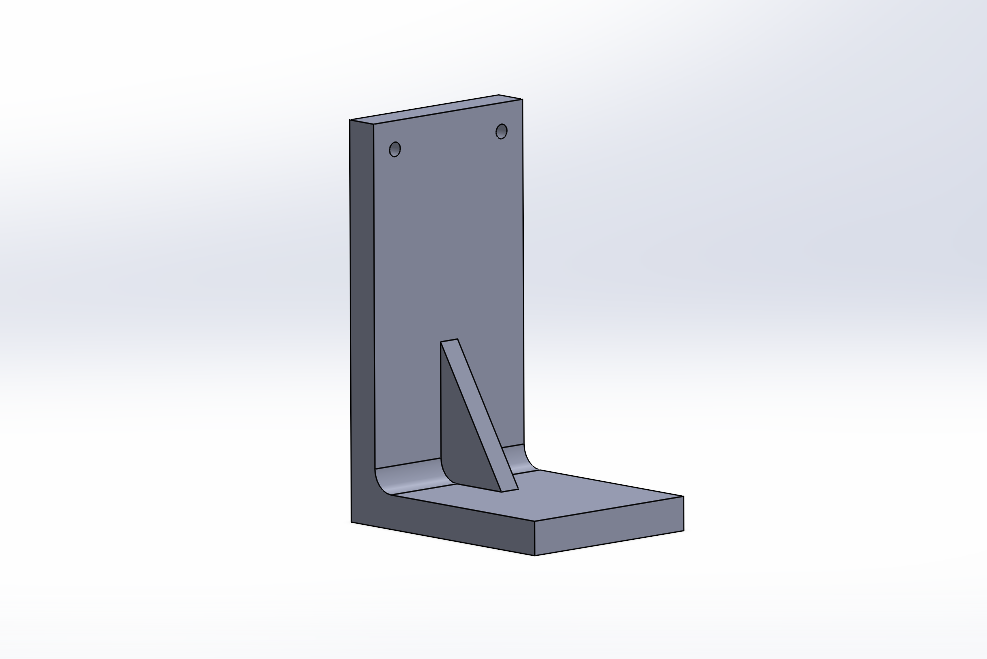
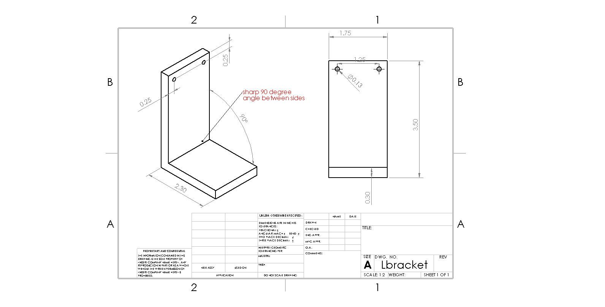
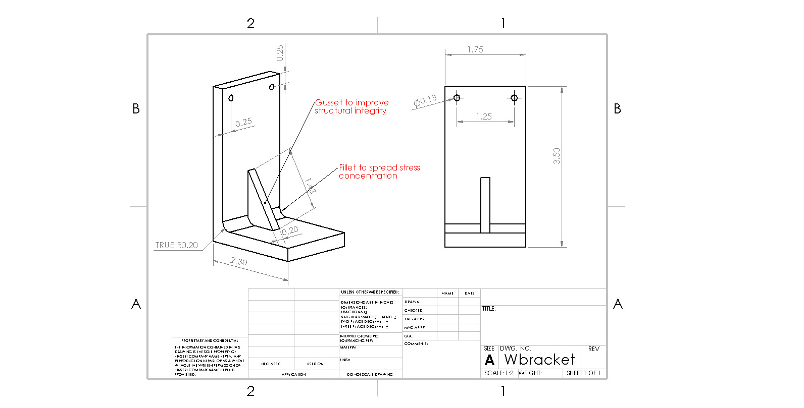
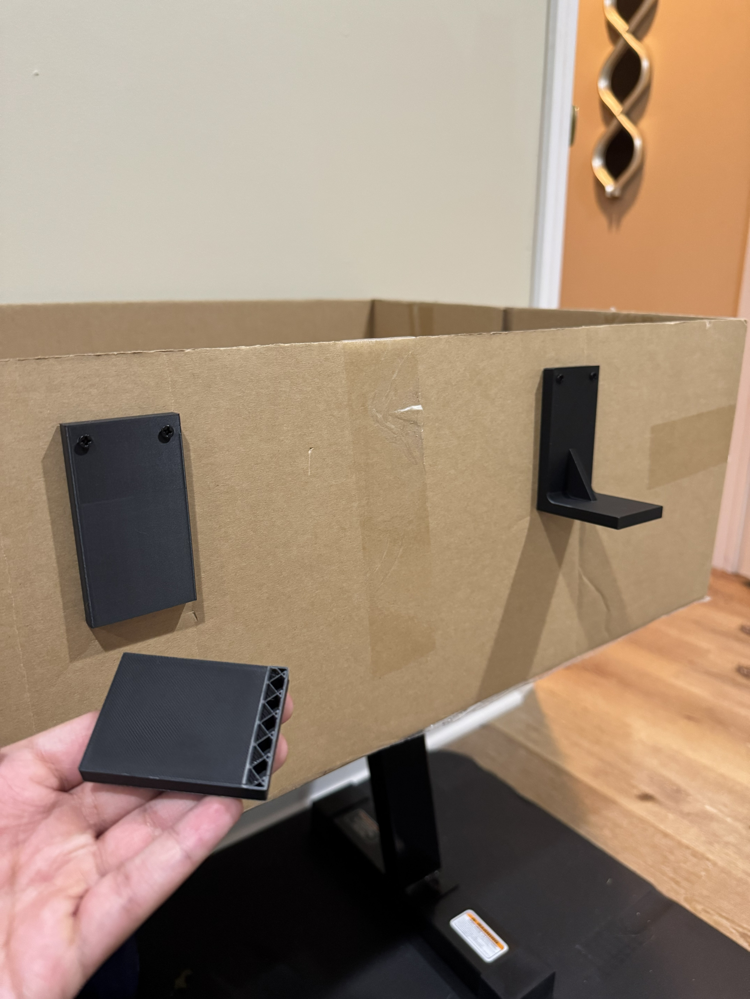
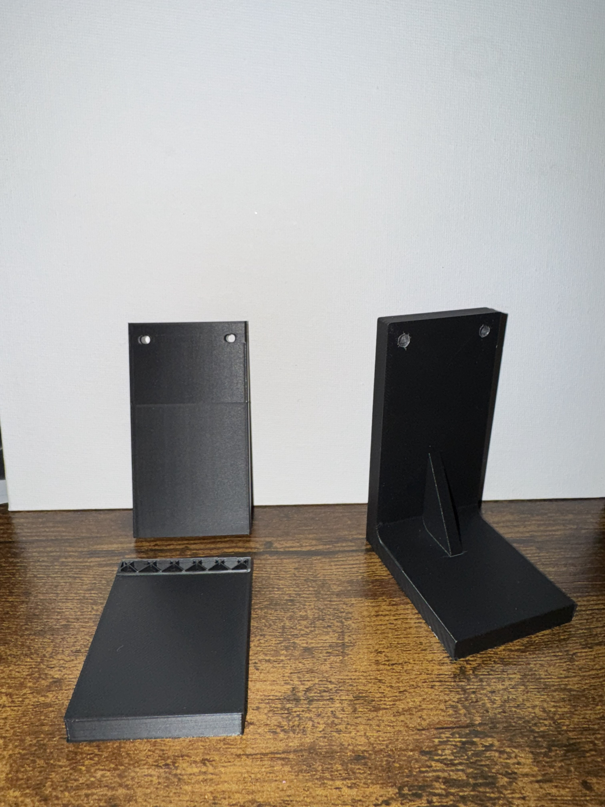

// Testing Engineering Principles: L-Bracket
 FIG. 1 — BASELINE L-BRACKET (LEFT) vs. OPTIMIZED L-BRACKET (RIGHT) — PRE-TEST
FIG. 1 — BASELINE L-BRACKET (LEFT) vs. OPTIMIZED L-BRACKET (RIGHT) — PRE-TEST
// OBJECTIVE
A hands-on run through the full engineering design loop — CAD modeling, FEA simulation, physical fabrication, and load testing. The goal: design two versions of an L-bracket, one structurally naive and one optimized, then prove the difference with a 3D printer and dead weights.
Both brackets are L-shaped wall mounts with identical outer dimensions. The one labeled "L-bracket" is the baseline design. The one labeled "Optimized L-Bracket" is the redesigned, optimized version — built to withstand significantly more force. It did.
// DESIGN APPROACH
Both brackets were modeled in SolidWorks. The baseline featured a sharp 90° internal corner — a classic stress concentration site where the notch effect funnels tensile stress to a single point, dramatically lowering the load needed for crack initiation.
The optimized version addressed this with two changes: a fillet radius at the inner corner to spread stress over a larger area, and a triangular gusset on the inner face to stiffen the joint and shorten the bending moment arm. Print orientation was also adjusted to align layer boundaries away from the primary tensile load path, exploiting PLA's anisotropic properties.
// CAD MODELS
Both designs were fully modeled in SolidWorks before printing. The baseline L-bracket is a plain right-angle bracket with a sharp 90° inner corner and no reinforcement. The optimized L-bracket adds a triangular gusset at the inner face and a fillet radius at the bend — same outer footprint, fundamentally different structural geometry.

FIG. 2 — SOLIDWORKS CAD: BASELINE L-BRACKET — SHARP 90° CORNER, NO GUSSET
FIG. 3 — SOLIDWORKS CAD: OPTIMIZED L-BRACKET — FILLET + TRIANGULAR GUSSET// ENGINEERING DRAWINGS
Formal engineering drawings were produced for both brackets per standard drafting conventions. Both share identical outer dimensions — 1.75" mounting face width, 3.50" vertical height, 2.30" shelf depth, 0.25" wall thickness. The only structural differences between the two are the presence of the gusset and fillet in the optimized L-bracket. Same footprint, fundamentally different load behavior.

FIG. 4 — ENGINEERING DRAWING: BASELINE L-BRACKET (SCALE 1:2) — NOTE SHARP 90° ANNOTATION
FIG. 5 — ENGINEERING DRAWING: OPTIMIZED L-BRACKET (SCALE 1:2) — GUSSET + FILLET ANNOTATED// SIMULATION — ANSYS FEA
Both designs were run through static structural analysis in Ansys before printing. Fixed boundary on the mounting face, vertical load on the horizontal shelf. The von Mises stress plots confirmed the hypothesis: the baseline showed stress exceeding yield at the sharp corner, while the optimized design kept peak stresses comfortably within the safe range throughout the fillet and gusset.
 FIG. 6 — ANSYS FEA: BASELINE L-BRACKET — PEAK VON MISES STRESS CONCENTRATED AT INNER CORNER
FIG. 6 — ANSYS FEA: BASELINE L-BRACKET — PEAK VON MISES STRESS CONCENTRATED AT INNER CORNER
 FIG. 7 — ANSYS FEA: OPTIMIZED L-BRACKET — STRESS DISTRIBUTED THROUGH GUSSET, NO CRITICAL CONCENTRATION
FIG. 7 — ANSYS FEA: OPTIMIZED L-BRACKET — STRESS DISTRIBUTED THROUGH GUSSET, NO CRITICAL CONCENTRATION
// PHYSICAL TESTING
Both brackets were printed in PLA, mounted to a rigid cardboard surface, and loaded incrementally with a standard weight plate hung from the shelf. The experiment was straightforward: keep adding load until something breaks — or doesn't. Results matched simulation predictions cleanly.
| BRACKET | DESIGN FEATURE | FAILURE LOAD | FAILURE MODE |
|---|---|---|---|
| Baseline L-Bracket | Sharp 90° corner, no gusset | < 10 kg | Brittle fracture at inner corner |
| Optimized L-Bracket | Fillet + triangular gusset | > 10 kg (survived) | — |
// END OF EXPERIMENT
The L-bracket's horizontal shelf fractured cleanly at the inner corner — exactly where FEA predicted peak stress. The optimized L-bracket, tested under the same conditions, showed zero fracture or visible deformation. The side-by-side result made the structural advantage unmistakable.

FIG. 9 — IMMEDIATELY POST-TEST: L-BRACKET SHELF FRACTURED CLEAN OFF. OPTIMIZED L-BRACKET (RIGHT) FULLY INTACT.
FIG. 10 — POST-TEST: BROKEN BASELINE L-BRACKET (LEFT) vs. SURVIVING OPTIMIZED L-BRACKET (RIGHT)// TAKEAWAYS
A small geometry change — adding a fillet and gusset — more than doubled effective load capacity. This project reinforced the value of closing the simulation-to-hardware loop and highlighted print orientation as a real design variable in FDM parts, not an afterthought.